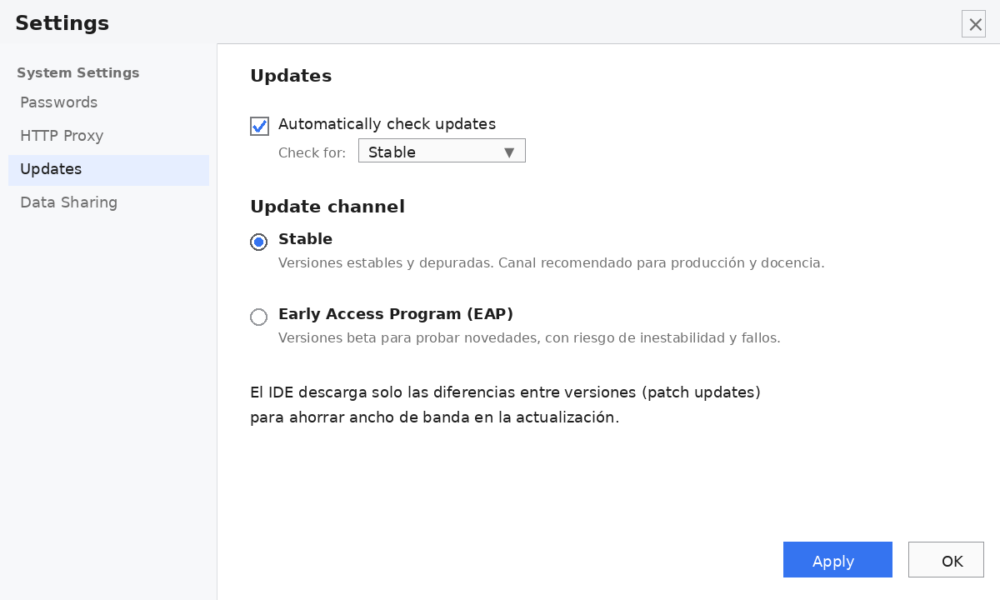
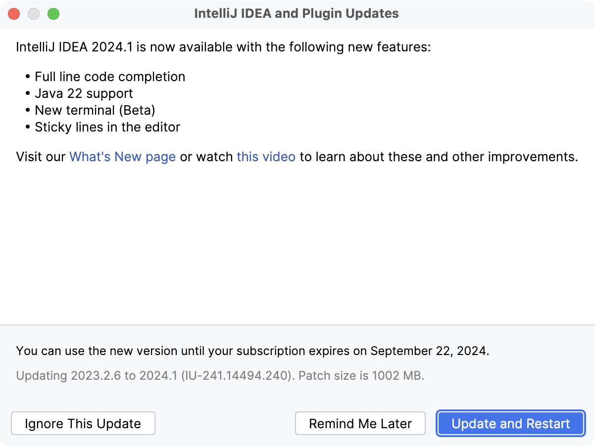
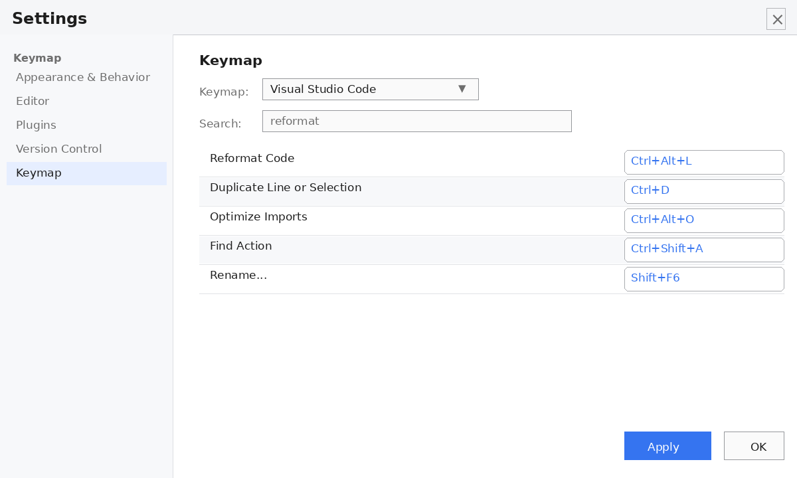
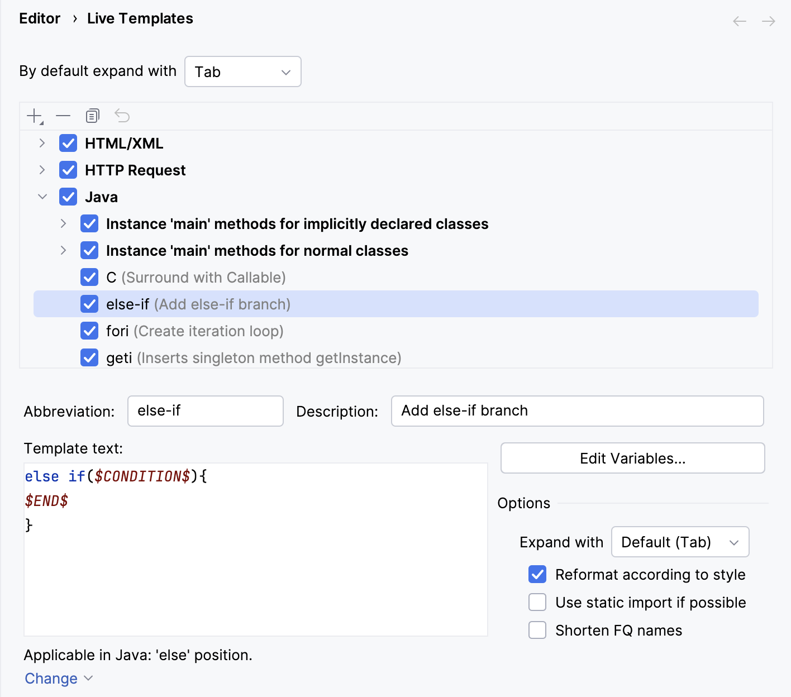
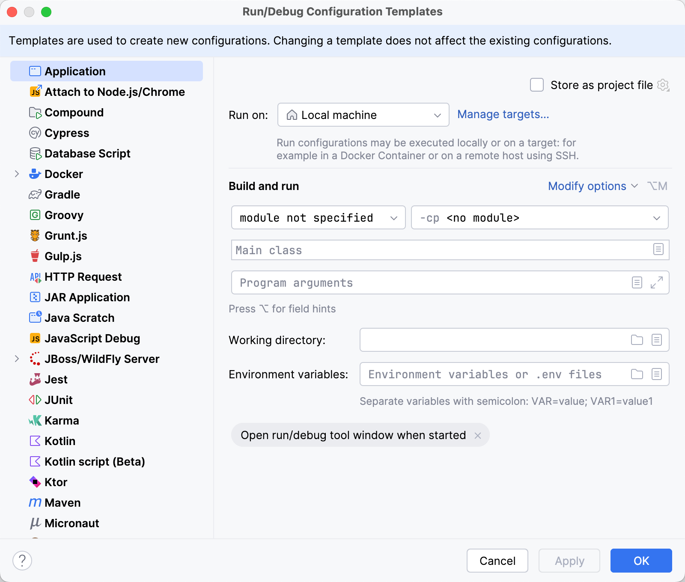

Personalización, automatización y mantenimiento del entorno
Personalizar un entorno de desarrollo no es un lujo ni una cuestión de estética, sino una inversión directa en productividad. Un IDE adaptado al ritmo de trabajo del programador elimina fricciones, reduce las tareas repetitivas que roban tiempo y, de paso, asegura la estabilidad y la seguridad de la herramienta con la que se trabaja cada día. Este apartado recorre los tres ejes que hacen posible esa adaptación: la personalización visual y de teclado, la automatización del código y de la ejecución, y el mantenimiento de las actualizaciones.
Configuración del sistema de actualización
Mantener el IDE al día no es un capricho estético, sino una necesidad práctica con tres frentes abiertos: los parches de seguridad que cierran vulnerabilidades, la compatibilidad con las nuevas versiones del JDK que van llegando al aula y la corrección de bugs en los propios plugins. Un IntelliJ desactualizado acaba dando problemas que nada tienen que ver con el código del alumno y sí con el propio entorno, y eso se traduce en horas de taller perdidas persiguiendo fallos ajenos. Por eso, entender cómo y cuándo se actualiza el IDE es parte de conocerlo.
A la hora de actualizar, IntelliJ ofrece dos mecanismos complementarios. Por un lado está la actualización integrada (in-place), que descarga e instala la nueva versión directamente sobre la instalación actual sin intervención manual. Por otro lado están las herramientas de gestión centralizada, como JetBrains Toolbox, que permiten instalar varias versiones del IDE en paralelo, alternar entre ellas y automatizar la actualización de todos los productos JetBrains instalados en el equipo. Para un aula de desarrollo, la actualización integrada suele bastar; Toolbox cobra sentido cuando se manejan varios IDEs a la vez o cuando se quiere tener, por ejemplo, una versión "estable" y otra "de pruebas" conviviendo en el mismo equipo.
Configuración de los canales de actualización
Para tocar estas opciones, la ruta pasa por File → Settings → Appearance & Behavior → System Settings → Updates en Linux y Windows; en macOS, la misma ventana se abre desde IntelliJ IDEA → Settings. Ahí es donde se decide cómo se comporta el IDE a la hora de buscar y aplicar nuevas versiones.
Dentro de esa ventana, el control que abre el apartado es la casilla "Automatically check updates", que decide si el IDE busca nuevas versiones por su cuenta al arrancar. En un aula conviene tenerla marcada, porque asegura que nadie se queda rezagado en una versión con fallos conocidos, pero conviene revisar la periodicidad para que la comprobación no se dispare a la vez en decenas de equipos y sature la red.
El siguiente ajuste crítico tiene que ver con los canales de actualización, y aquí merece la pena detenerse, porque no todas las actualizaciones son iguales. El canal Stable Release entrega las versiones estables y depuradas, que ya han pasado por un proceso de prueba amplio. Es el canal recomendado tanto para producción como para docencia, porque minimiza los sobresaltos: lo que llega está pensado para funcionar. Frente a él está el Early Access Program (EAP), un canal que adelanta versiones beta con las novedades antes de que estén pulidas. La contrapartida es un riesgo real de inestabilidad y de fallos en los proyectos, porque esas versiones aún no han sido suficientemente probadas. El EAP tiene sentido para quien quiere probar lo último y reportar problemas, no para un entorno de clase donde lo que importa es que todo funcione de forma predecible y que una regresión no arruine una práctica.
Queda un detalle que ahorra tiempo y ancho de banda: cuando el IDE aplica una actualización menor, no descarga la versión completa, sino solo las diferencias respecto a la instalada, los llamados patch updates. El resultado es una actualización mucho más ligera y rápida, algo que se agradece en redes de aula con conexiones justas.

Comprobación manual y aplicación de parches
Además de la comprobación automática, siempre cabe lanzar la búsqueda a mano desde el menú Help → Check for Updates.... Es la vía rápida para forzar una comprobación justo antes de un examen o de una práctica importante, sin esperar al ciclo automático del IDE.
Cuando hay una versión nueva, el IDE muestra una ventana emergente con el listado de cambios (el changelog) y dos caminos claros: "Update and Restart", que descarga la actualización y reinicia el entorno para aplicarla, o "Ignore This Version", que deja pasar esa versión concreta sin volver a molestar. Es recomendable echar un vistazo al changelog antes de actualizar, sobre todo si el proyecto está en una fase delicada, porque así se sabe qué se va a cambiar.

Tras una actualización mayor, queda un frente más que el propio entorno vigila: la compatibilidad de los plugins. IntelliJ detecta qué complementos instalados no son compatibles con la nueva versión y lo comunica al arrancar, ofreciendo actualizarlos en bloque o desactivarlos de forma selectiva. Conviene prestar atención a este aviso, porque un plugin desactualizado suele ser justo el causante de que el IDE se comporte de forma extraña después de actualizar.
Personalización del entorno de trabajo
Personalizar la herramienta es, en el fondo, adaptarla a las manos de quien la usa. Dos aspectos concentran la mayor parte de esa adaptación: cómo se interactúa con el IDE (el teclado) y cómo se da forma al código (el estilo).
Gestión del mapa de teclado (Keymap)
Empezar por el teclado tiene una razón de peso: cada vez que apartamos la mano del teclado para ir al ratón, se pierde tiempo y, sobre todo, concentración. Los movimientos de ratón interrumpen el "hilo mental" del programador, mientras que un atajo bien aprendido se ejecuta casi sin pensar. El mapa de teclado (keymap) es el catálogo que asocia cada acción del IDE a una combinación de teclas, y se gestiona desde File → Settings → Keymap.
Dentro de esa ventana, un campo de búsqueda permite localizar cualquier acción por su nombre y ver, o cambiar, el atajo que tiene asignado. Aquí se resuelven los gestos más repetidos del día a día: el formateo de código, la duplicación de líneas o la importación automática de paquetes son candidatos habituales a quedar en combinaciones cómodas que no obliguen a mirar los menús. La idea es que las operaciones frecuentes estén a un par de teclas de distancia.
A partir de esta base, conviene saber que IntelliJ incluye esquemas predefinidos que imitan los atajos de otros editores, como Eclipse o Visual Studio Code. Para quien llega de uno de esos entornos, cargar el esquema correspondiente evita reaprender los atajos desde cero y hace la transición prácticamente transparente. En un aula donde conviven alumnos con backgrounds distintos, partir de un esquema conocido reduce mucho la fricción inicial.

Estilo de código y formateo automático
El siguiente eje de personalización tiene que ver con la forma del propio código, y su importancia crece a medida que el trabajo deja de ser individual. La ruta File → Settings → Editor → Code Style → Java concentra las reglas de estilo: tamaño de la sangría, uso de tabulaciones frente a espacios y la colocación de las llaves, entre otros detalles. Definir estas reglas de forma coherente es lo que mantiene el código legible cuando lo tocan varias personas o cuando un mismo proyecto cruza varios equipos del aula.
Cuando cada miembro del equipo formatea a su manera, los cambios se llenan de diferencias artificiales que nada tienen que ver con el contenido: una persona usa cuatro espacios, otra un tabulador, otra coloca las llaves en la línea siguiente. Eso ensucia el historial de cambios y hace difícil ver lo que realmente ha cambiado. Un estilo común, en cambio, hace que cualquier miembro pueda leer el código de otro como si fuera suyo.
La utilidad real de configurar el estilo aparece al aplicar el formateo automático en bloque: con una combinación de teclas (por defecto Ctrl + Alt + L), el IDE reescribe el fichero siguiendo las reglas configuradas. Es una forma rápida de normalizar un código que ha llegado desordenado y de ahorrar discusiones sobre estilo, porque el criterio ya queda fijado en la configuración y no depende de opiniones.
Automatización en el entorno de desarrollo
Si la personalización adapta la herramienta a la persona, la automatización va un paso más allá: hace que el IDE trabaje por ti en las tareas repetitivas, tanto al escribir código como al ejecutarlo.
Automatización con plantillas en vivo (Live Templates)
La automatización del código encuentra su mejor aliado en los Live Templates (plantillas en vivo). El problema que resuelven es el de la redundancia: hay bloques de código que se repiten una y otra vez (un main, un System.out.println, un bucle for, la lectura por consola) y reescribirlos a mano cada vez es una pérdida de tiempo y una fuente de errores. Las Live Templates convierten esos bloques en plantillas reutilizables.
La idea es simple: se escribe una abreviatura corta, se pulsa Tabulador y el IDE la expande en la estructura de código completa. Es la diferencia entre teclear seis líneas o teclear cuatro letras.
Antes de crear plantillas propias conviene conocer las que ya vienen de serie, porque cubren la mayoría de los casos. Las más usadas en Java son psvm (que genera el método main), sout (que genera un System.out.println) y los bucles como fori (que genera un bucle for con índice).
Para crear una plantilla propia, la ruta es File → Settings → Editor → Live Templates. Allí se da de alta una nueva plantilla indicando tres cosas:
- La abreviatura que la dispara.
- El contexto de inserción, es decir, en qué situaciones el IDE ofrecerá la plantilla. Este matiz es importante: una plantilla puede limitarse a Statement (una sentencia dentro de un método), a Declaration (el lugar donde se declaran variables o métodos) o a Expression (una expresión que devuelve un valor). Acotar el contexto hace que la plantilla solo aparezca donde tiene sentido, y evita que el autocompletado se llene de sugerencias inútiles.
- El cuerpo del código que se desea generar.
Un caso práctico de primero de DAW es crear una plantilla que instancie la lectura por consola con la clase Scanner, evitando escribir una y otra vez las mismas líneas de importación y de creación del objeto. Con el tiempo, cada programador acaba teniendo su pequeño repertorio de plantillas, y ese repertorio se traduce en minutos ahorrados cada día.

Automatización de tareas de ejecución (Run/Debug Configurations)
La automatización no termina en el código; también alcanza a la forma de ejecutarlo. Las Run/Debug Configurations son perfiles que guardan cómo se lanza una aplicación, y se gestionan desde Run → Edit Configurations.... Tener una configuración bien definida evita repetir manualmente los mismos pasos cada vez que se quiere probar el programa.
Dentro de cada configuración destacan varios campos que ahorran mucho trabajo de prueba:
- Program arguments: permite pasar argumentos de línea de comandos al programa, los famosos
argsque recibe el métodomain. Esto es clave para probar la lógica sin andar modificando el código fuente cada vez: en lugar de cambiar una línea para probar un valor distinto, se le pasa el valor como argumento y el programa lo lee al arrancar. - Variables de entorno: permiten definir variables que el programa verá como si estuvieran configuradas en el sistema. Son muy útiles para simular despliegues y entornos distintos (desarrollo, pruebas, producción) sin tocar la configuración real de la máquina.
- Before launch: la sección que programa las acciones que se ejecutan de forma automática justo antes de arrancar la aplicación: la compilación previa, la limpieza de ficheros o la ejecución de un script. Encadenar estas tareas garantiza que cada ejecución arranca siempre sobre un estado limpio y compilado, sin pasos manuales intermedios.
La ventaja de tener todo esto guardado en un perfil es que la ejecución se vuelve repetible. Cualquiera que abra el proyecto puede lanzarlo con las mismas condiciones, sin depender de recordar un comando complicado. Y el propio programador ahorra tener que reconstruir mentalmente, cada vez, cómo se lanzaba aquel programa.
